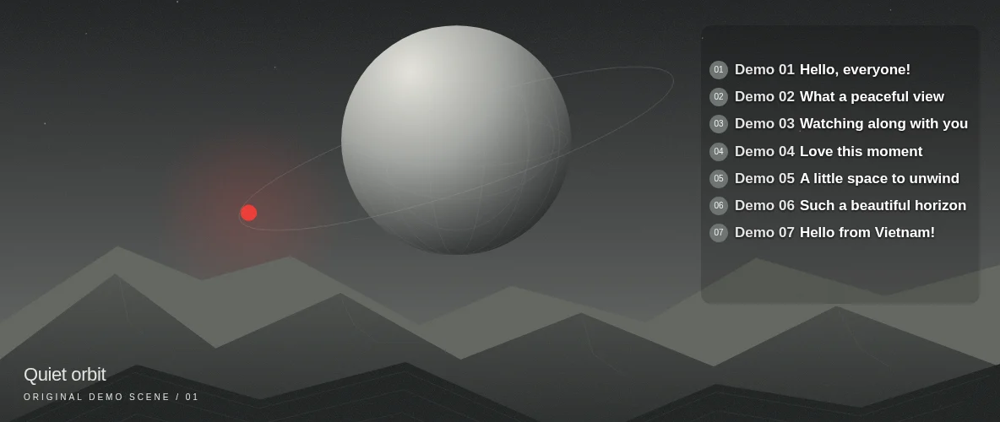
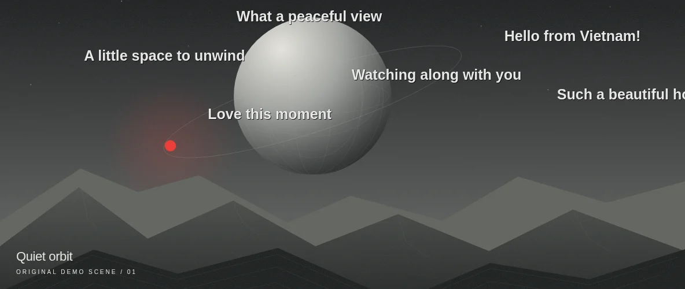
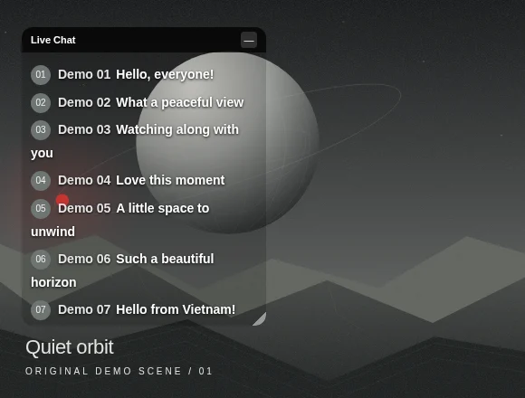
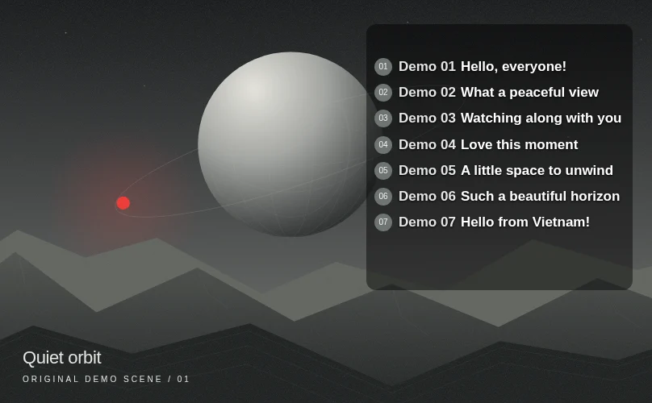
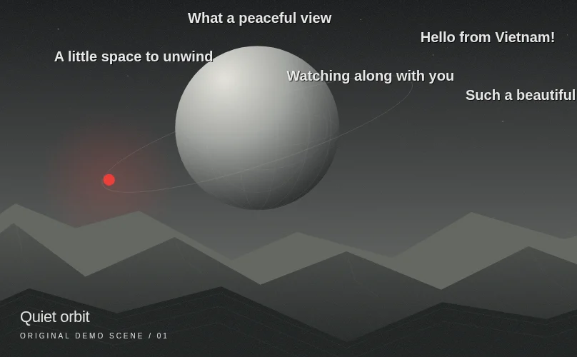

01 · Floating Chat
Keep chat right over the video.
Frameless transparent overlay for Fullscreen and Theater Mode with auto-hide native side chat.
Transparent, draggable live chat overlay and 60FPS Danmaku scrolling comments for YouTube fullscreen and theater mode — zero tracking.
Manifest V3 · ~37 KB · Zero Analytics · Live Streams & Replays

Real v1.2.0 extension captures over prepared sample chat.
Frameless transparent overlay for Fullscreen and Theater Mode with auto-hide native side chat.

Bilibili-style comments with avatars, emoji, Super Chats, pause sync, and Danmaku-only mode.

Saved placement stays clamped inside the player; collapse to a Live Chat badge in one click.

Edit colors directly inside the popup without OS pickers closing Firefox; zero video blur.

Set scroll speed (4s–20s), font size (14–38px), outline, and top 1/3, 1/2, 3/4 or fullscreen lanes.
~37 KB vanilla JS · No canvas redraws · No blur filters.
Coalesces iframe messages into 80ms bursts instead of per-message IPC spam.
Exit-time reservations prevent overlapping comments and hold backlog while paused.
Compositor-only transforms keep CPU low with single-channel storage sync.
Click any chapter to jump directly to that feature. English captions included.
| Feature | YouTube Native | DanmaChat |
|---|---|---|
| Fullscreen chat | Squeezes or hides chat | 100% video + transparent box |
| Danmaku mode | None | 60FPS DOM/WAAPI lanes |
| Position & size | Fixed right column | Drag, resize, Live Chat badge |
| Colors & opacity | Light / Dark only | 0–100% opacity, RGB / HEX |
| Replays & Super Chat | Static sidebar | Pause sync + Danmaku badges |
Open-source MIT JavaScript. No analytics, no ads, data_collection_permissions: ["none"].
storage
Saves your settings and chat coordinates locally in chrome.storage.local.
https://www.youtube.com/*
Reads visible live chat messages only on YouTube watch & live pages.
Enter fullscreen or theater mode and the extension auto-hides the side column, showing live chat in a transparent draggable overlay over the full video.
Yes. Turn Floating Chat off and keep Danmaku on — scrolling comments continue reading directly from YouTube's native chat.
Yes, both live streams and replays are supported, and Danmaku pauses and resumes in sync with the video player.
Chrome, Edge, Brave, Arc, and Opera via the Chrome Web Store, plus a dedicated Manifest V3 Firefox (109+) build on GitHub.
No. 80ms IPC batching, compositor-only WAAPI transforms, and zero blur filters keep playback smooth at ~37 KB total size.
100% free, MIT open source, no account, no analytics, and no remote servers. All preferences stay inside your browser.
Install the ~37 KB open-source extension in seconds.